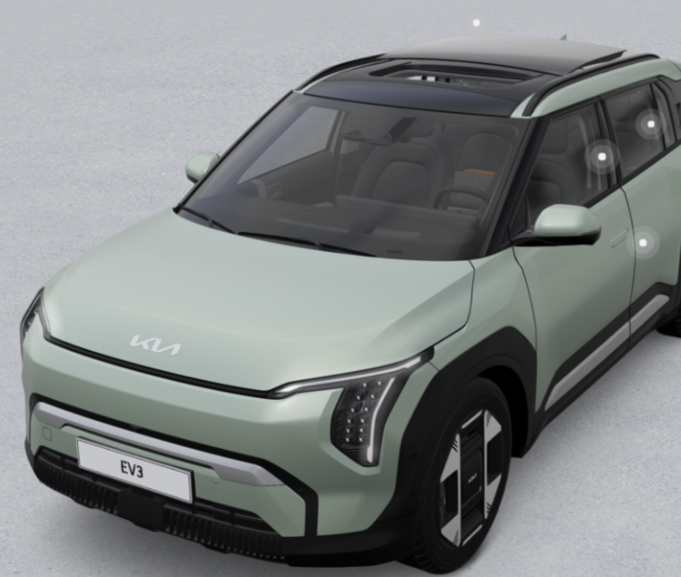
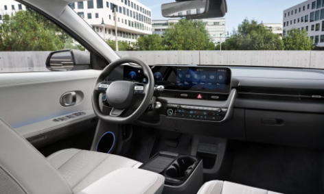

핵심 요약
✔ EV3는 도심 출퇴근과 첫 전기차, 1~2인 이용에 잘 맞는 편
✔ EV6는 긴 주행거리와 주행 성능, 장거리 이동 비중이 높은 운전자에게 적합
✔ 아이오닉5는 넓은 실내와 2열 활용성 때문에 가족·캠핑 수요에서 강점
✔ 전기차 장기렌트는 충전비뿐 아니라 계약기간, 연간 주행거리, 보조금 반영 방식과 반납 기준을 함께 비교해야 함
✔ 동일 차량도 렌터카사 재고와 프로모션, 보증금·선수금 여부에 따라 월 렌트료 차이가 큼
✔ EV3는 도심 출퇴근과 첫 전기차, 1~2인 이용에 잘 맞는 편
✔ EV6는 긴 주행거리와 주행 성능, 장거리 이동 비중이 높은 운전자에게 적합
✔ 아이오닉5는 넓은 실내와 2열 활용성 때문에 가족·캠핑 수요에서 강점
✔ 전기차 장기렌트는 충전비뿐 아니라 계약기간, 연간 주행거리, 보조금 반영 방식과 반납 기준을 함께 비교해야 함
✔ 동일 차량도 렌터카사 재고와 프로모션, 보증금·선수금 여부에 따라 월 렌트료 차이가 큼
전기차 장기렌트를 먼저 고려하는 이유
전기차 구매를 망설이는 사람은 보통 차량 가격, 배터리 가치 변화, 충전 환경과 향후 중고차 가격을 함께 걱정합니다. 장기렌트는 차량을 직접 소유하지 않고 일정 기간 이용하는 방식이기 때문에 초기 목돈 부담을 줄이고, 계약 만기에는 반납이나 인수 조건을 검토할 수 있다는 점에서 전기차와 궁합이 맞는 편입니다.
특히 전기차는 신형 모델과 충전 기술이 빠르게 바뀌기 때문에 3~5년 뒤 다른 차량으로 교체할 가능성을 염두에 두는 이용자가 많습니다. 이 경우 중고차 판매 시세를 직접 감당하지 않아도 되는 반납형 장기렌트가 편할 수 있습니다. 반대로 차량을 오래 소유할 계획이 명확하다면 만기 인수가격과 총납부액을 구매 방식과 반드시 비교해야 합니다.
전기차 장기렌트의 월 비용에는 차량 가격뿐 아니라 잔존가치, 계약기간, 연간 주행거리, 보험 조건, 정비 서비스와 렌터카사의 할인율이 반영됩니다. 국고·지자체 보조금 역시 개인이 직접 받는 구매 방식과 동일하게 단순 계산되지 않을 수 있으므로, 견적서에 어떤 방식으로 반영됐는지 확인하는 것이 중요합니다.
특히 전기차는 신형 모델과 충전 기술이 빠르게 바뀌기 때문에 3~5년 뒤 다른 차량으로 교체할 가능성을 염두에 두는 이용자가 많습니다. 이 경우 중고차 판매 시세를 직접 감당하지 않아도 되는 반납형 장기렌트가 편할 수 있습니다. 반대로 차량을 오래 소유할 계획이 명확하다면 만기 인수가격과 총납부액을 구매 방식과 반드시 비교해야 합니다.
전기차 장기렌트의 월 비용에는 차량 가격뿐 아니라 잔존가치, 계약기간, 연간 주행거리, 보험 조건, 정비 서비스와 렌터카사의 할인율이 반영됩니다. 국고·지자체 보조금 역시 개인이 직접 받는 구매 방식과 동일하게 단순 계산되지 않을 수 있으므로, 견적서에 어떤 방식으로 반영됐는지 확인하는 것이 중요합니다.
EV3 장기렌트: 첫 전기차와 도심 출퇴근 중심

사회초년생출퇴근첫 전기차
EV3는 세 차종 가운데 차체 부담이 비교적 적고 도심 주행과 주차 편의성을 중요하게 보는 이용자가 먼저 비교할 만한 모델입니다. 출퇴근 거리가 일정하고 대부분 혼자 또는 두 명이 이용한다면 넓은 차체보다 월 부담과 효율을 우선하기 쉬운데, 이때 EV3의 성격이 잘 맞을 수 있습니다.
기아 공식 제원상 EV3는 배터리와 휠 조건에 따라 인증 주행거리가 달라집니다. 따라서 광고에서 본 최대 주행거리만 기준으로 판단하지 말고 실제 계약하려는 스탠다드·롱레인지, 휠 크기와 옵션 조건을 확인해야 합니다. 겨울철 저온, 고속도로 비중, 난방 사용과 급가속 여부에 따라 실제 주행 가능 거리는 달라질 수 있습니다.
장기렌트 관점에서는 EV3가 상대적으로 낮은 차량가와 높은 효율을 바탕으로 월 렌트료 접근성이 좋을 가능성이 있지만, 보증금이나 선수금이 포함된 최저가 광고인지 반드시 확인해야 합니다. 사회초년생은 월 렌트료만 감당 가능하다고 판단하기보다 충전비, 주차비, 통행료, 사고 면책금과 중도해지 가능성까지 포함해 월 예산을 잡는 것이 안전합니다.
EV3는 도심형 전기차이지만 장거리 운행이 불가능한 차는 아닙니다. 다만 매주 고속도로 장거리를 달리거나 가족 짐이 많은 경우라면 EV6 또는 아이오닉5와 실내 공간, 승차감과 충전 계획을 함께 비교하는 편이 좋습니다.
EV3는 세 차종 가운데 차체 부담이 비교적 적고 도심 주행과 주차 편의성을 중요하게 보는 이용자가 먼저 비교할 만한 모델입니다. 출퇴근 거리가 일정하고 대부분 혼자 또는 두 명이 이용한다면 넓은 차체보다 월 부담과 효율을 우선하기 쉬운데, 이때 EV3의 성격이 잘 맞을 수 있습니다.
기아 공식 제원상 EV3는 배터리와 휠 조건에 따라 인증 주행거리가 달라집니다. 따라서 광고에서 본 최대 주행거리만 기준으로 판단하지 말고 실제 계약하려는 스탠다드·롱레인지, 휠 크기와 옵션 조건을 확인해야 합니다. 겨울철 저온, 고속도로 비중, 난방 사용과 급가속 여부에 따라 실제 주행 가능 거리는 달라질 수 있습니다.
장기렌트 관점에서는 EV3가 상대적으로 낮은 차량가와 높은 효율을 바탕으로 월 렌트료 접근성이 좋을 가능성이 있지만, 보증금이나 선수금이 포함된 최저가 광고인지 반드시 확인해야 합니다. 사회초년생은 월 렌트료만 감당 가능하다고 판단하기보다 충전비, 주차비, 통행료, 사고 면책금과 중도해지 가능성까지 포함해 월 예산을 잡는 것이 안전합니다.
EV3는 도심형 전기차이지만 장거리 운행이 불가능한 차는 아닙니다. 다만 매주 고속도로 장거리를 달리거나 가족 짐이 많은 경우라면 EV6 또는 아이오닉5와 실내 공간, 승차감과 충전 계획을 함께 비교하는 편이 좋습니다.
EV6 장기렌트: 장거리와 주행 성능을 중시할 때
장거리 주행주행 성능스포티한 디자인
EV6는 낮고 역동적인 차체 비율과 주행 성능을 선호하는 이용자가 많이 비교하는 전기차입니다. 출퇴근뿐 아니라 고속도로 이동이 많고, 충전 정차 횟수와 주행 안정성을 중요하게 본다면 EV3보다 EV6가 적합할 수 있습니다.
기아 공식 제원에서 EV6 롱레인지 2WD 일부 조건은 복합 인증 주행거리가 490km 안팎으로 안내됩니다. 다만 트림, 구동방식, 휠, 빌트인캠 적용 여부에 따라 수치가 달라지므로 실제 계약 차량의 제원표를 확인해야 합니다. 인증 수치는 비교 기준이고 실제 주행거리는 외기온도와 속도, 탑승 인원, 공조 사용량에 따라 달라집니다.
EV6 장기렌트의 단점은 EV3보다 차량 가격과 타이어·보험 조건이 높아질 수 있다는 점입니다. 월 렌트료가 비슷해 보여도 한 견적은 선수금이 포함되고 다른 견적은 무보증일 수 있으므로 총납부액으로 비교해야 합니다. 고성능 또는 상위 트림은 만기 인수금도 높아질 수 있습니다.
1~2인이 이용하면서 고속도로 이동이 많고 운전 감각을 중요하게 생각한다면 EV6가 매력적입니다. 반면 뒷좌석에 가족이 자주 타거나 실내 개방감과 캠핑 적재를 우선한다면 아이오닉5가 더 편할 수 있습니다.
EV6는 낮고 역동적인 차체 비율과 주행 성능을 선호하는 이용자가 많이 비교하는 전기차입니다. 출퇴근뿐 아니라 고속도로 이동이 많고, 충전 정차 횟수와 주행 안정성을 중요하게 본다면 EV3보다 EV6가 적합할 수 있습니다.
기아 공식 제원에서 EV6 롱레인지 2WD 일부 조건은 복합 인증 주행거리가 490km 안팎으로 안내됩니다. 다만 트림, 구동방식, 휠, 빌트인캠 적용 여부에 따라 수치가 달라지므로 실제 계약 차량의 제원표를 확인해야 합니다. 인증 수치는 비교 기준이고 실제 주행거리는 외기온도와 속도, 탑승 인원, 공조 사용량에 따라 달라집니다.
EV6 장기렌트의 단점은 EV3보다 차량 가격과 타이어·보험 조건이 높아질 수 있다는 점입니다. 월 렌트료가 비슷해 보여도 한 견적은 선수금이 포함되고 다른 견적은 무보증일 수 있으므로 총납부액으로 비교해야 합니다. 고성능 또는 상위 트림은 만기 인수금도 높아질 수 있습니다.
1~2인이 이용하면서 고속도로 이동이 많고 운전 감각을 중요하게 생각한다면 EV6가 매력적입니다. 반면 뒷좌석에 가족이 자주 타거나 실내 개방감과 캠핑 적재를 우선한다면 아이오닉5가 더 편할 수 있습니다.
아이오닉5 장기렌트: 가족과 공간 활용을 우선할 때
패밀리카넓은 실내캠핑·레저
아이오닉5는 전기차 전용 플랫폼의 장점을 실내 공간에 적극적으로 활용한 모델입니다. 외관 크기만 봤을 때보다 실내가 넓게 느껴지고 2열 승객과 짐을 함께 싣는 상황에서 장점이 두드러집니다. 어린 자녀가 있거나 부모님을 자주 모시고 이동하는 경우, 캠핑이나 레저 장비를 싣는 경우라면 EV3와 체감 차이가 클 수 있습니다.
아이오닉5 장기렌트를 비교할 때는 트림과 배터리 사양, 2WD·AWD, 휠 크기, 옵션 구성이 월 비용에 미치는 영향을 살펴야 합니다. 넓은 실내와 편의 사양 때문에 옵션을 추가하기 쉽지만, 계약기간 전체로 보면 작은 월 차이도 총납부액에서는 커질 수 있습니다.
패밀리카로 사용할 경우 월 렌트료만큼 중요한 것이 운전자 범위와 보험 조건입니다. 배우자나 가족이 함께 운전한다면 등록 가능한 운전자 범위, 연령 제한, 사고 면책금을 확인해야 합니다. 유아용 카시트와 짐을 자주 싣는다면 만기 반납 시 실내 오염과 손상 기준도 미리 살펴보는 것이 좋습니다.
아이오닉5는 전기차 전용 플랫폼의 장점을 실내 공간에 적극적으로 활용한 모델입니다. 외관 크기만 봤을 때보다 실내가 넓게 느껴지고 2열 승객과 짐을 함께 싣는 상황에서 장점이 두드러집니다. 어린 자녀가 있거나 부모님을 자주 모시고 이동하는 경우, 캠핑이나 레저 장비를 싣는 경우라면 EV3와 체감 차이가 클 수 있습니다.
아이오닉5 장기렌트를 비교할 때는 트림과 배터리 사양, 2WD·AWD, 휠 크기, 옵션 구성이 월 비용에 미치는 영향을 살펴야 합니다. 넓은 실내와 편의 사양 때문에 옵션을 추가하기 쉽지만, 계약기간 전체로 보면 작은 월 차이도 총납부액에서는 커질 수 있습니다.
패밀리카로 사용할 경우 월 렌트료만큼 중요한 것이 운전자 범위와 보험 조건입니다. 배우자나 가족이 함께 운전한다면 등록 가능한 운전자 범위, 연령 제한, 사고 면책금을 확인해야 합니다. 유아용 카시트와 짐을 자주 싣는다면 만기 반납 시 실내 오염과 손상 기준도 미리 살펴보는 것이 좋습니다.

아이오닉5 실내가 가족용으로 유리한 이유
아이오닉5의 실내는 평평한 바닥과 여유 있는 휠베이스 덕분에 1열과 2열 이동, 레그룸과 수납 활용에서 장점이 있습니다. 장거리 이동 중 휴식을 취하거나 아이와 함께 타는 경우, 차량 내부에서 보내는 시간이 길수록 실내 구조의 차이가 크게 느껴질 수 있습니다.
전기차를 처음 선택하는 사람은 주행거리만 비교하는 경우가 많지만 실제 만족도는 시트 착좌감, 2열 공간, 트렁크 접근성과 운전석 시야에서도 갈립니다. 가족이 함께 이용한다면 전시장이나 시승 차량에서 2열 승하차, 카시트 장착, 트렁크 적재를 직접 확인하는 편이 좋습니다.
캠핑이나 차박을 계획한다면 차량 외부 전력 활용 기능과 옵션 포함 여부를 확인해야 합니다. 모든 트림과 계약 차량에 동일한 편의 기능이 포함되는 것은 아니므로 “아이오닉5니까 당연히 있다”고 가정하지 말고 견적서의 세부 옵션을 확인해야 합니다.
전기차를 처음 선택하는 사람은 주행거리만 비교하는 경우가 많지만 실제 만족도는 시트 착좌감, 2열 공간, 트렁크 접근성과 운전석 시야에서도 갈립니다. 가족이 함께 이용한다면 전시장이나 시승 차량에서 2열 승하차, 카시트 장착, 트렁크 적재를 직접 확인하는 편이 좋습니다.
캠핑이나 차박을 계획한다면 차량 외부 전력 활용 기능과 옵션 포함 여부를 확인해야 합니다. 모든 트림과 계약 차량에 동일한 편의 기능이 포함되는 것은 아니므로 “아이오닉5니까 당연히 있다”고 가정하지 말고 견적서의 세부 옵션을 확인해야 합니다.
EV3·EV6·아이오닉5 한눈에 비교
| 항목 | EV3 | EV6 | 아이오닉5 |
|---|---|---|---|
| 주요 추천 대상 | 사회초년생, 1~2인, 도심 출퇴근 | 장거리 운전자, 주행 성능 중시 | 가족, 2열·적재 공간 중시 |
| 차체 부담 | 상대적으로 작아 도심·주차에 유리 | 낮고 스포티한 성격 | 넓은 실내와 개방감 |
| 월 비용 경향 | 세 차종 중 접근성이 좋은 편일 가능성 | 트림과 사양에 따라 상승폭 큼 | 배터리·구동방식·옵션에 따라 차이 |
| 장거리 적합성 | 가능하지만 이용 패턴 확인 필요 | 강점이 뚜렷한 편 | 가족 장거리 이동에 편안한 편 |
| 공간 활용 | 일상용으로 충분한 편 | 운전자 중심 성격 | 2열과 적재 활용이 강점 |
| 선택 전 핵심 | 스탠다드·롱레인지와 실주행 거리 | 휠·구동방식과 총납부액 | 옵션, 가족 운전자 보험과 반납 기준 |
표는 차량의 일반적인 성격을 장기렌트 이용 관점에서 정리한 것입니다. 실제 계약 조건과 차량 사양은 견적서 및 제조사 제원을 확인해야 합니다.
전기차 월 렌트료를 좌우하는 조건
전기차 장기렌트 가격은 차량 모델만으로 결정되지 않습니다. 같은 EV6라도 36개월과 60개월, 연간 1만km와 3만km, 무보증과 보증금 조건은 월 비용이 다릅니다. 렌터카사가 확보한 재고 차량과 출고 예정 차량의 할인율도 차이를 만듭니다.
계약기간이 길어지면 월 렌트료가 낮아질 수 있지만 중도해지 부담이 커집니다. 연간 주행거리를 낮게 설정하면 월 비용은 줄어들 수 있으나 만기 반납 시 초과 주행료가 발생할 수 있습니다. 보증금은 계약 종료 후 정산을 거쳐 반환되는 구조가 일반적이지만, 선수금은 렌트료를 미리 내는 방식이라 반환되지 않습니다.
전기차는 보조금 반영 여부도 확인해야 합니다. 장기렌트 견적에서 보조금이 어떤 방식으로 계산됐는지, 보조금 변동이나 출고 시점에 따라 계약 금액이 달라질 가능성이 있는지 서면으로 확인하는 것이 좋습니다. 광고 금액만 보고 계약하기보다 초기 납입액, 월 렌트료, 만기 인수금과 부가비용을 모두 합산해야 합니다.
계약기간이 길어지면 월 렌트료가 낮아질 수 있지만 중도해지 부담이 커집니다. 연간 주행거리를 낮게 설정하면 월 비용은 줄어들 수 있으나 만기 반납 시 초과 주행료가 발생할 수 있습니다. 보증금은 계약 종료 후 정산을 거쳐 반환되는 구조가 일반적이지만, 선수금은 렌트료를 미리 내는 방식이라 반환되지 않습니다.
전기차는 보조금 반영 여부도 확인해야 합니다. 장기렌트 견적에서 보조금이 어떤 방식으로 계산됐는지, 보조금 변동이나 출고 시점에 따라 계약 금액이 달라질 가능성이 있는지 서면으로 확인하는 것이 좋습니다. 광고 금액만 보고 계약하기보다 초기 납입액, 월 렌트료, 만기 인수금과 부가비용을 모두 합산해야 합니다.
충전비와 실제 유지비를 계산하는 방법
전기차 충전비는 월 주행거리, 차량 전비, 완속·급속 충전 비율과 충전사업자 요금에 따라 달라집니다. 집이나 회사에서 완속 충전을 안정적으로 이용할 수 있다면 비용과 편의성 모두 유리할 수 있습니다. 반대로 공용 급속 충전에 크게 의존하면 충전비와 대기시간이 예상보다 늘어날 수 있습니다.
차량을 선택하기 전에 거주지 주차장에 충전기가 있는지, 야간에 실제로 사용 가능한지, 직장 근처 충전 환경은 어떤지 확인해야 합니다. 충전기가 설치되어 있어도 등록 차량 수와 충전기 수의 차이 때문에 원하는 시간에 사용하기 어려울 수 있습니다.
전기차는 엔진오일 교환이 없지만 타이어, 브레이크액, 에어컨 필터, 와이퍼와 일반 소모품은 관리해야 합니다. 차량 중량과 출력 특성 때문에 타이어 마모가 빠르게 느껴질 수도 있습니다. 정비 포함 장기렌트를 선택할 때는 타이어 교체 횟수와 규격, 소모품 범위가 계약에 포함되는지 확인해야 합니다.
차량을 선택하기 전에 거주지 주차장에 충전기가 있는지, 야간에 실제로 사용 가능한지, 직장 근처 충전 환경은 어떤지 확인해야 합니다. 충전기가 설치되어 있어도 등록 차량 수와 충전기 수의 차이 때문에 원하는 시간에 사용하기 어려울 수 있습니다.
전기차는 엔진오일 교환이 없지만 타이어, 브레이크액, 에어컨 필터, 와이퍼와 일반 소모품은 관리해야 합니다. 차량 중량과 출력 특성 때문에 타이어 마모가 빠르게 느껴질 수도 있습니다. 정비 포함 장기렌트를 선택할 때는 타이어 교체 횟수와 규격, 소모품 범위가 계약에 포함되는지 확인해야 합니다.
전기차 장기렌트의 장점과 단점
| 구분 | 내용 |
|---|---|
| 장점 | 초기 비용을 낮출 수 있고 보험·세금 관리가 단순하며, 만기 반납을 선택하면 중고차 판매 부담을 줄일 수 있음 |
| 장점 | 신형 전기차를 일정 기간 이용한 뒤 기술 변화에 맞춰 교체하기 편함 |
| 단점 | 계약 중 자유롭게 차량을 처분할 수 없고 중도해지 위약금이 발생할 수 있음 |
| 단점 | 주행거리 제한과 반납 손상 기준, 사고 면책금이 있음 |
| 단점 | 충전 환경이 불편하면 낮은 유지비보다 사용 불편이 크게 느껴질 수 있음 |
나에게 맞는 전기차 선택 기준
EV3가 잘 맞는 경우
출퇴근과 도심 주행이 중심이고, 차량 크기와 월 부담을 적정 수준으로 유지하고 싶을 때 적합합니다. 첫 전기차로 충전 습관을 익히려는 사회초년생이나 1~2인 이용자가 비교하기 좋습니다.
EV6가 잘 맞는 경우
고속도로와 장거리 주행 비중이 높고, 디자인과 주행 성능을 중요하게 생각한다면 우선순위가 높습니다. 다만 상위 사양으로 갈수록 총비용 상승폭을 확인해야 합니다.
아이오닉5가 잘 맞는 경우
가족이 함께 타고 2열 공간과 적재 활용이 중요하다면 적합합니다. 캠핑, 장거리 가족 이동과 실내 편의성을 우선할 때 장점이 큽니다.
차량을 결정하기 어렵다면 세 차종을 같은 계약기간, 주행거리, 무보증 또는 동일 보증금 조건으로 요청해 비교하는 것이 가장 정확합니다.
출퇴근과 도심 주행이 중심이고, 차량 크기와 월 부담을 적정 수준으로 유지하고 싶을 때 적합합니다. 첫 전기차로 충전 습관을 익히려는 사회초년생이나 1~2인 이용자가 비교하기 좋습니다.
EV6가 잘 맞는 경우
고속도로와 장거리 주행 비중이 높고, 디자인과 주행 성능을 중요하게 생각한다면 우선순위가 높습니다. 다만 상위 사양으로 갈수록 총비용 상승폭을 확인해야 합니다.
아이오닉5가 잘 맞는 경우
가족이 함께 타고 2열 공간과 적재 활용이 중요하다면 적합합니다. 캠핑, 장거리 가족 이동과 실내 편의성을 우선할 때 장점이 큽니다.
차량을 결정하기 어렵다면 세 차종을 같은 계약기간, 주행거리, 무보증 또는 동일 보증금 조건으로 요청해 비교하는 것이 가장 정확합니다.
계약 전 최종 체크리스트
✔ 실제 계약 차량의 배터리·구동방식·휠과 인증 주행거리
✔ 집과 직장의 완속·급속 충전 환경
✔ 36·48·60개월별 월 렌트료와 총납부액
✔ 보증금과 선수금의 구분 및 반환 여부
✔ 연간 주행거리와 초과 주행료
✔ 보조금 반영 방식과 출고 지연 시 계약 조건
✔ 운전자 연령·범위와 사고 면책금
✔ 정비 상품의 타이어·소모품 포함 범위
✔ 중도해지 위약금과 승계 가능 조건
✔ 만기 반납 손상 기준과 인수가격
✔ 집과 직장의 완속·급속 충전 환경
✔ 36·48·60개월별 월 렌트료와 총납부액
✔ 보증금과 선수금의 구분 및 반환 여부
✔ 연간 주행거리와 초과 주행료
✔ 보조금 반영 방식과 출고 지연 시 계약 조건
✔ 운전자 연령·범위와 사고 면책금
✔ 정비 상품의 타이어·소모품 포함 범위
✔ 중도해지 위약금과 승계 가능 조건
✔ 만기 반납 손상 기준과 인수가격
자주 묻는 질문 (FAQ)
Q. 전기차 장기렌트가 가솔린 차량보다 항상 저렴한가요?A. 충전비와 세금 측면에서 유리할 수 있지만 차량 가격, 계약 조건과 충전 환경에 따라 총비용은 달라집니다. 동일 기간과 주행거리로 견적을 비교해야 합니다.
Q. EV3와 아이오닉5 중 어떤 차량이 좋나요?
A. 도심 출퇴근과 1~2인 이용, 월 부담을 중시하면 EV3가 적합할 수 있고 가족 이용과 2열·적재 공간이 중요하면 아이오닉5가 유리할 수 있습니다.
Q. EV6는 장거리 운전에 적합한가요?
A. 롱레인지 사양은 긴 인증 주행거리를 제공하는 편이지만 실제 거리는 겨울철, 속도와 공조 사용에 따라 달라집니다. 자주 이용하는 경로의 충전소도 함께 확인해야 합니다.
Q. 장기렌트에서도 전기차 보조금이 적용되나요?
A. 렌터카사의 차량 취득과 견적 산정 과정에서 반영될 수 있으나 개인 구매와 구조가 동일하지 않을 수 있습니다. 견적서에 반영 방식과 변동 조건을 확인해야 합니다.
Q. 배터리가 고장 나면 이용자가 비용을 부담하나요?
A. 정상적인 제조상 문제는 보증과 계약 조건에 따라 처리될 수 있지만 사고, 침수, 임의 개조와 사용자 과실은 다르게 적용될 수 있습니다. 렌터카사와 제조사 보증 조건을 확인해야 합니다.
Q. 전기차 장기렌트는 몇 년 계약이 적당한가요?
A. 차량 교체와 기술 변화에 유연하게 대응하려면 36~48개월을 비교할 수 있고, 월 비용을 낮추려면 더 긴 계약이 제시될 수 있습니다. 중도해지 가능성과 총납부액을 함께 봐야 합니다.
차량 주행거리와 사양은 기아 EV3·EV6 및 현대자동차 아이오닉5 공식 페이지를 참고했으며, 실제 차량 사양과 장기렌트 조건은 트림·휠·구동방식·계약 시점과 업체별 정책에 따라 달라질 수 있습니다.